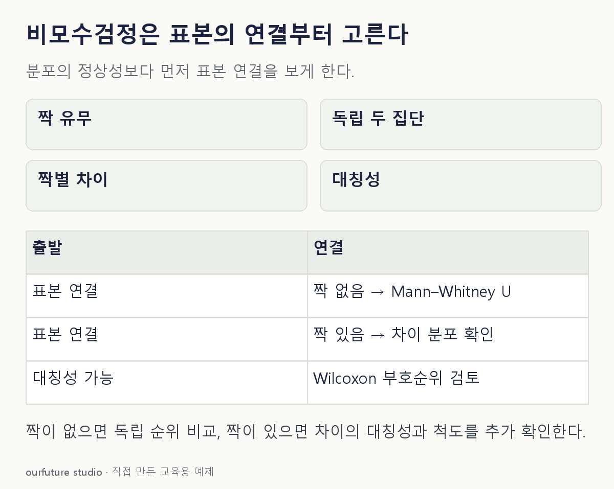

핵심 이론
비모수검정은 아무 가정도 없는 검정이라는 뜻이 아니다. 연속형 또는 순서형 자료의 순위로 비교하더라도 관측의 독립성, 표본 설계, 동점 처리 등은 검토해야 한다. 독립된 두 집단의 분포를 비교하는 Mann–Whitney U 검정과, 같은 사람의 두 측정을 짝지어 차이를 보는 Wilcoxon 부호순위 검정은 입력의 연결 구조가 다르다.
Mann–Whitney의 귀무가설을 곧바로 두 집단 중앙값이 같다고 바꾸면 조건이 빠진다. 분포 모양이 같고 위치만 다른 모형 같은 추가 조건 아래에서 위치 차이로 읽을 수 있다. 모양과 산포도 함께 다르면 검정 결과만으로 중앙값 차이를 특정하기 어렵다. 정규성을 확인하지 못했다는 이유만으로 모든 상황에 같은 순위검정을 쓰지 않는다.
부호순위 검정은 짝별 차이의 크기에 순위를 매기므로 차이 분포의 대칭성 같은 해석 조건을 살핀다. 짝 정보가 있으면 원래 점수를 두 독립 집단처럼 합치지 않는다. 아래 문항은 검정 종류를 고르는 자체 예제이며 p값이나 불명확한 복원 문항의 공식 정답을 주장하지 않는다.
작은 예제로 확인하기
서로 다른 사람에게서 A={1,3,5}, B={2,4,6}을 관측했다. 전체 값의 순위를 합하면 A는 1+3+5=9, B는 2+4+6=12다.
| 자료 구조 | 먼저 검토할 순위검정 |
|---|---|
| 서로 다른 두 집단 | Mann–Whitney U |
| 동일인의 전·후 | Wilcoxon 부호순위 |
세 명씩 독립 표본이므로 집단 간 순위 배치를 비교한다. 표본이 작다는 사실만으로 유의함이나 차이 없음이 정해지지는 않는다.
그림으로 확인하기

직접 고르기
서로 다른 사람의 두 독립 집단. 순서형 반응의 분포를 순위로 비교하려 한다.
보기 중 자료 구조에 맞는 검정은?
- 1. 대응표본 t검정
- 2. Wilcoxon 부호순위 검정
- 3. Mann–Whitney U 검정
- 4. 범주 빈도 카이제곱검정
정답과 오답의 이유 확인하기
정답 3번 — Mann–Whitney U 검정
두 집단 사이에 짝이 없고 순위 기반 분포 비교를 원하므로 Mann–Whitney U가 맞는다.
- 1번: 같은 사람의 차이 평균을 다루는 설계가 아니다.
- 2번: 짝별 차이가 필요한 검정인데 여기에는 짝이 없다.
- 4번: 반응을 범주별 빈도로 정리하는 상황을 제시하지 않았다.
조건 하나 바꾸어 풀기
자료가 동일인 세 명의 교육 전·후 점수이고 짝별 차이의 대칭성을 가정할 수 있다면 어떤 순위검정을 검토하는가?
풀이: Wilcoxon 부호순위 검정.
사람별 전·후를 연결해 차이를 만든다. 검정 선택과 별개로 0인 차이·동점·표본 수에 맞는 계산 방식을 확인해야 한다.
다시 떠올릴 단서
독립 두 집단인가, 같은 사람의 차이인가.
근거와 적용 조건
- SciPy mannwhitneyu — Notes: 두 독립 표본의 분포 비교와 짝진 자료에는 wilcoxon 사용. 확인일 2026-10-30.
- SciPy wilcoxon — paired differences, symmetry about zero, ties and zero-differences. 확인일 2026-10-30.
상황·수치·보기·조건 변경은 자체 교육 예제다. 민간 복원 문항의 공식 정답이나 실제 성능·학습 효과를 뜻하지 않는다.
읽은 내용을 적용해 보기
연속·순서형 독립 비교와 수치 차이가 정의되는 짝진 비교만 다룬다. 표본 수·동점·0 차이의 p값은 계산하지 않는다.